// Approach
The 12 simulations are structured across three levels of increasing complexity. Each level builds on the previous one by introducing a new variable — control strategy, state observer, or tyre model — while keeping all other parameters identical, so that performance differences can be directly attributed to the change under test.
// 01 — Level 1
Command Strategies
4 Tests · QuartAdams Trajectory · Linear tyre · Rear axle ON · No Observer · Progress Reference : Test 1.1
PD Commande
Test 1.1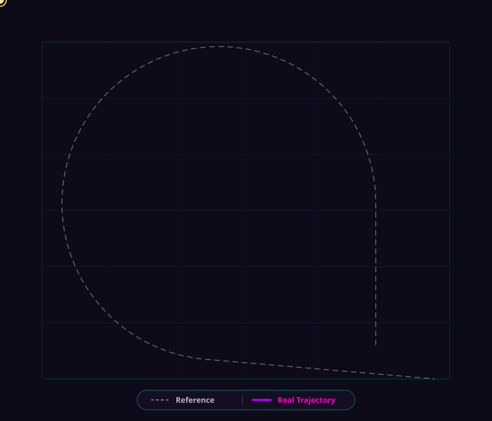
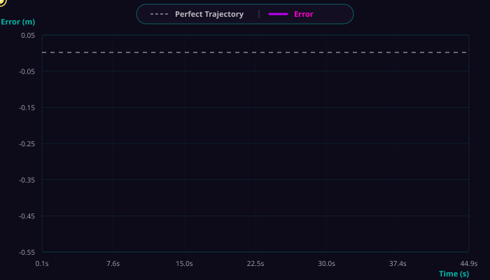
Exact Linearization via Backstepping
Test 1.2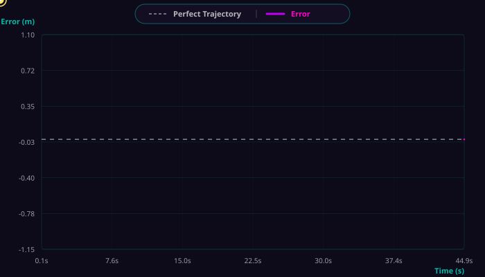
Backstepping and FeedForward
Test 1.3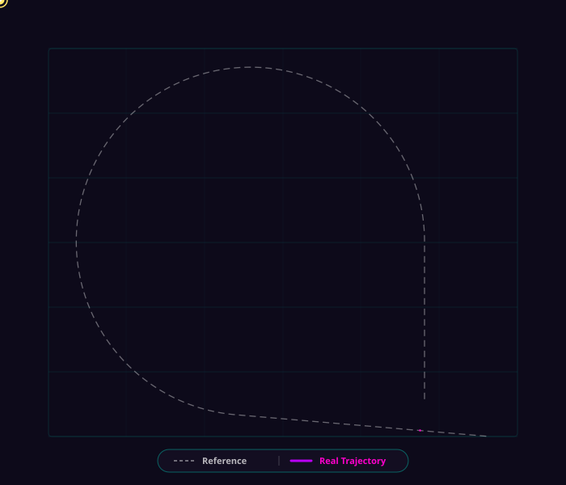
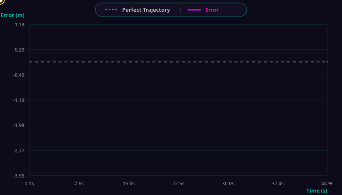
Generalized Predicted Control
Test 1.4// 02 — Level 2
Observer
5 Tests · QuartAdams Trajectory · GPC · Progress Reference : Test 1.4
Rear Axle Off
Test 2.1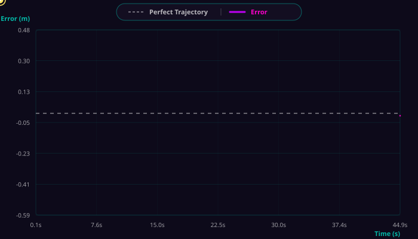
Pacejka
Test 2.2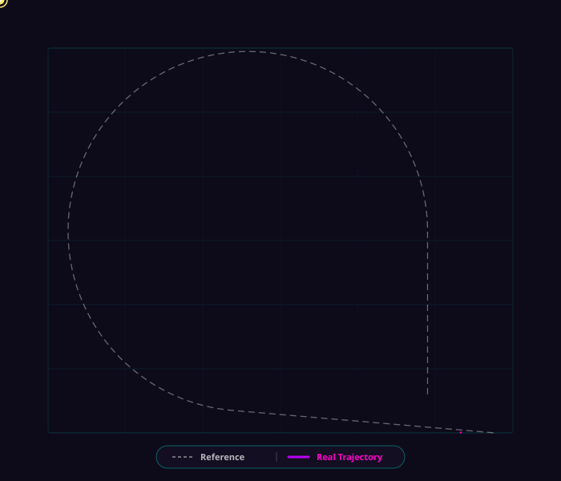
Kinematic Inversion
Test 2.3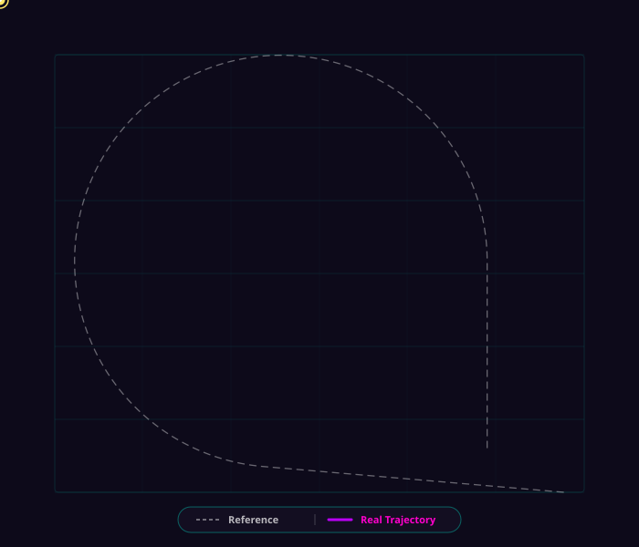
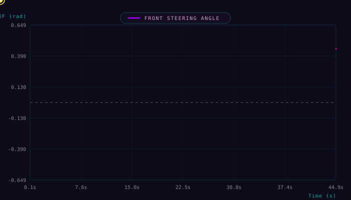
Luenberger
Test 2.4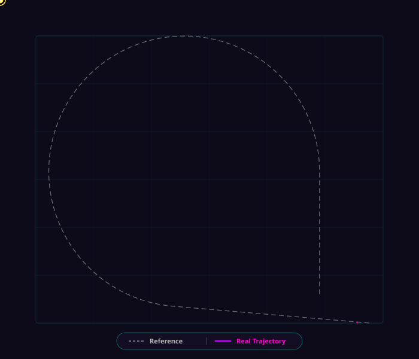
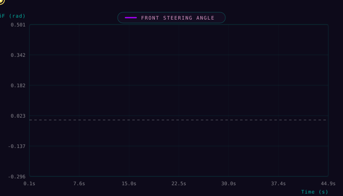
Lyapunov-based Adaptive Observer
Test 2.5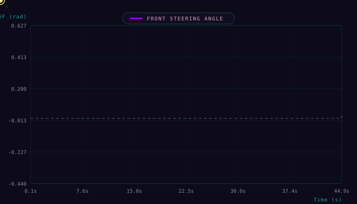
// 03 — Level 3
Sigmoid
3 Tests · ZAdams Trajectory · Progress Reference : Test 3.1
GPC & Lyapunov & Pacejka & Rear ON
Test 3.1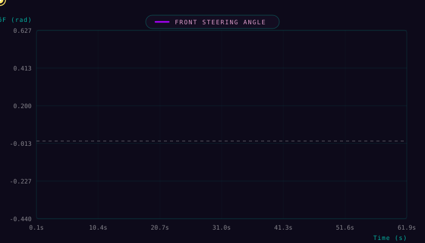
GPC & Lyapunov & Pacejka & Rear OFF
Test 3.2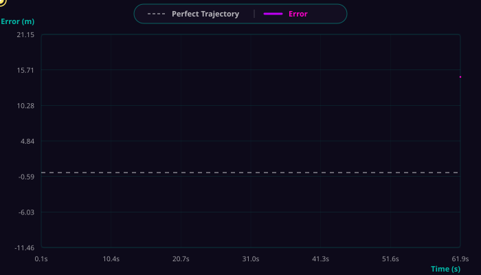
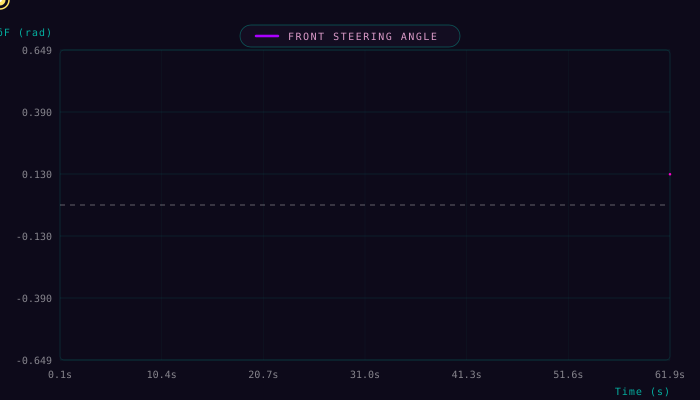
PD & Lyapunov & Pacejka & Rear ON
Test 3.3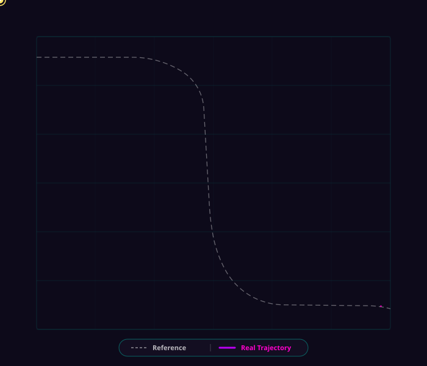
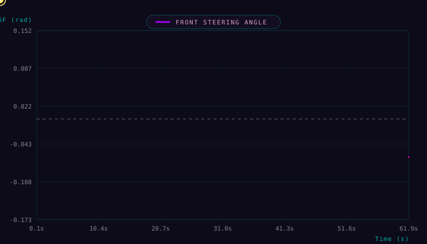
// Conclusion
Takeaway
Every component in this architecture earns its place — but only under the right conditions. The PD is adequate when the trajectory is forgiving and the speed is low. The Backstepping removes the steady-state error the PD cannot. The Feedforward anticipates what the Backstepping only reacts to — but demands accurate slip angle estimates to do so. The GPC closes the loop on the actuator's own lag. The observer makes the nonlinear tire model transparent to the controller. The rear axle decouples what the front axle alone cannot separate.
None of these additions is redundant. Each one addresses a specific failure mode that the previous layer exposes. The gap between the simplest and the most complete configuration is invisible on easy paths — and decisive exactly when it matters most.